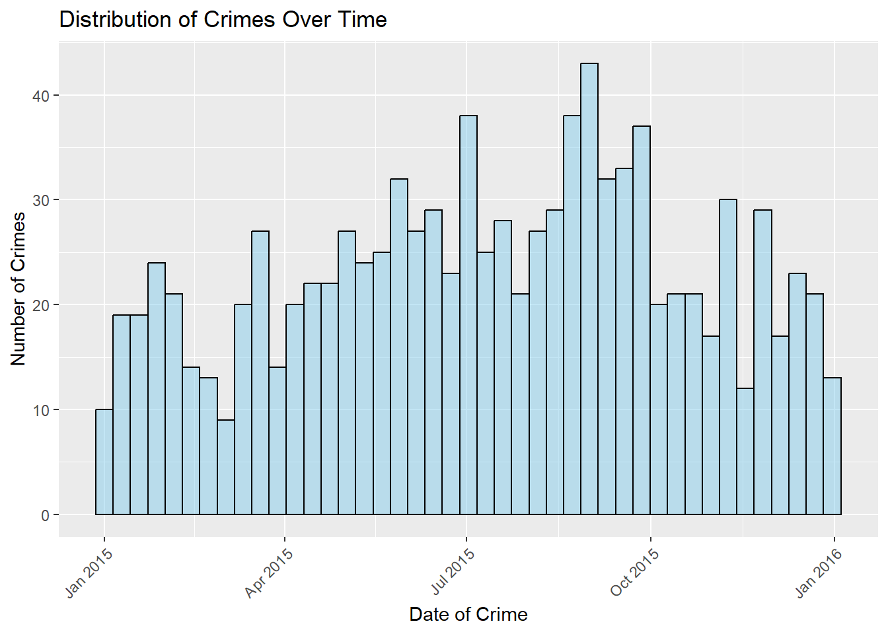
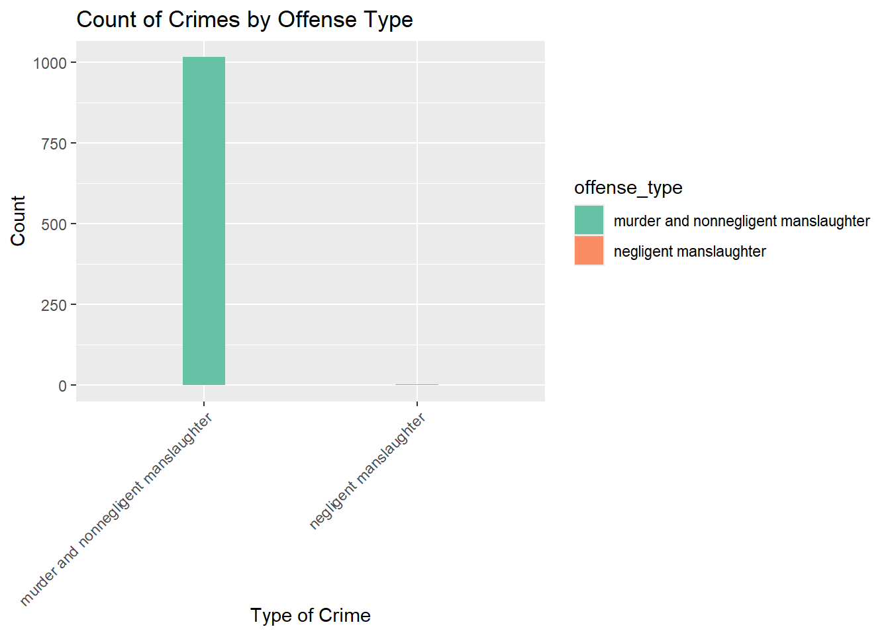
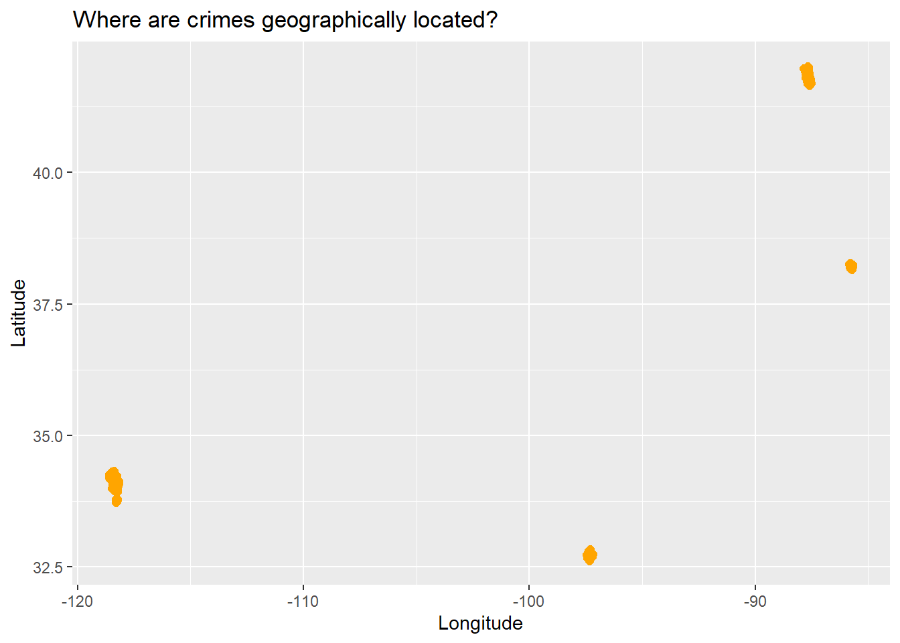
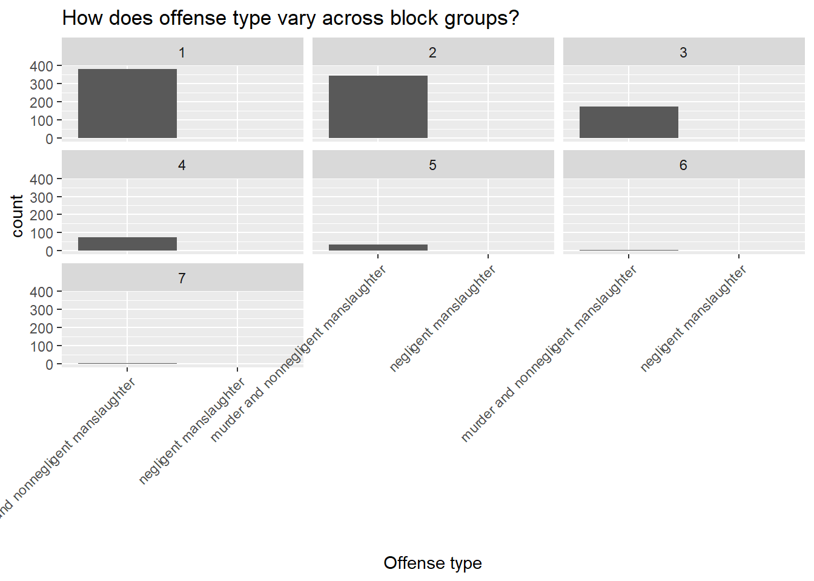
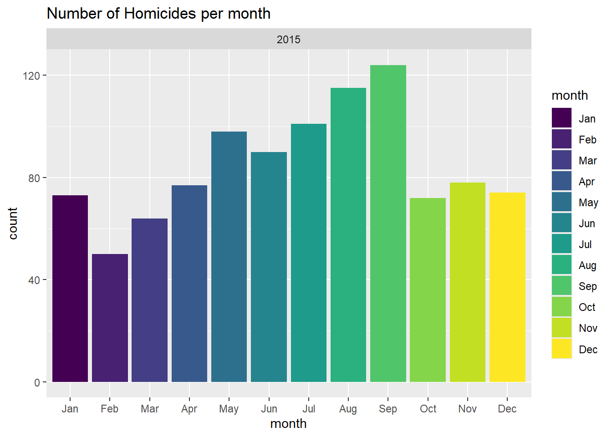
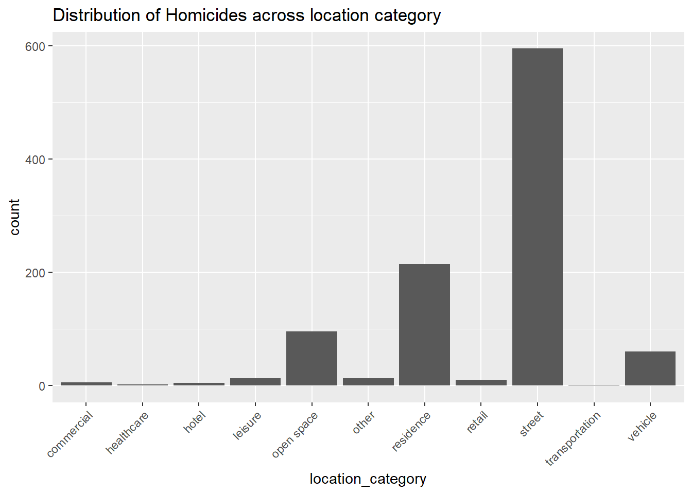
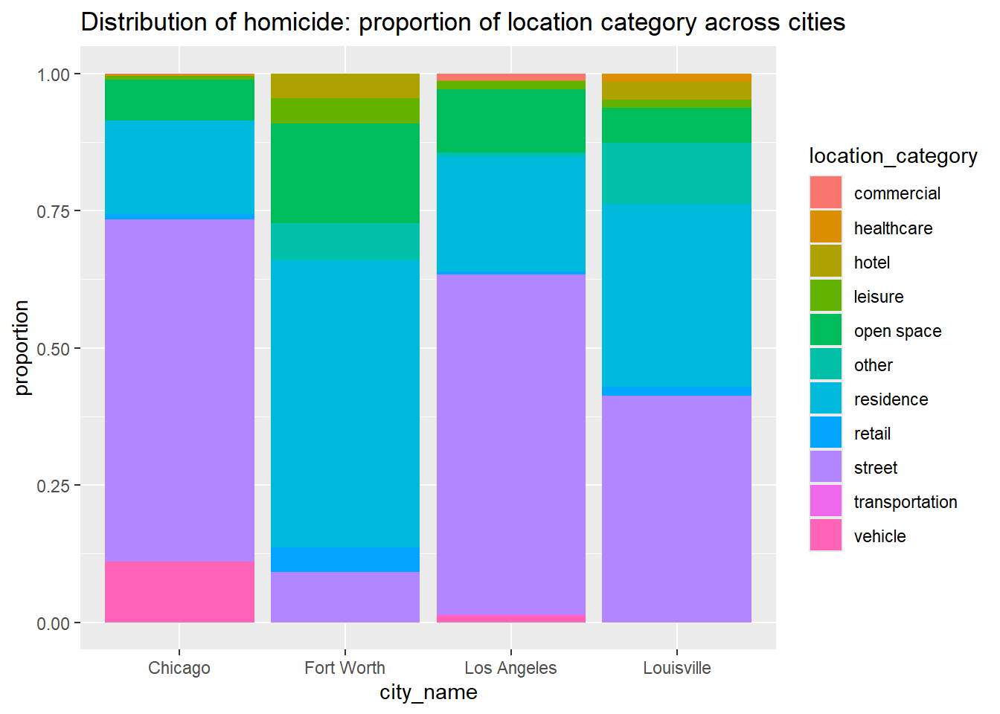
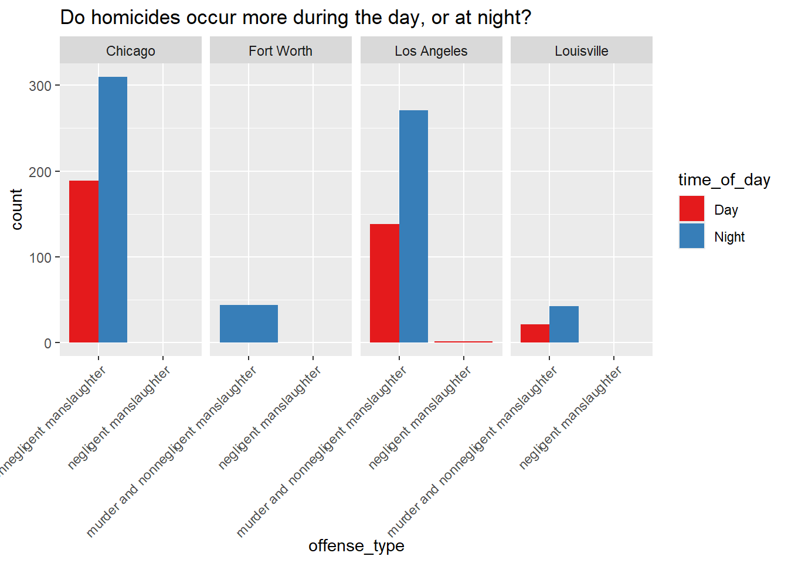
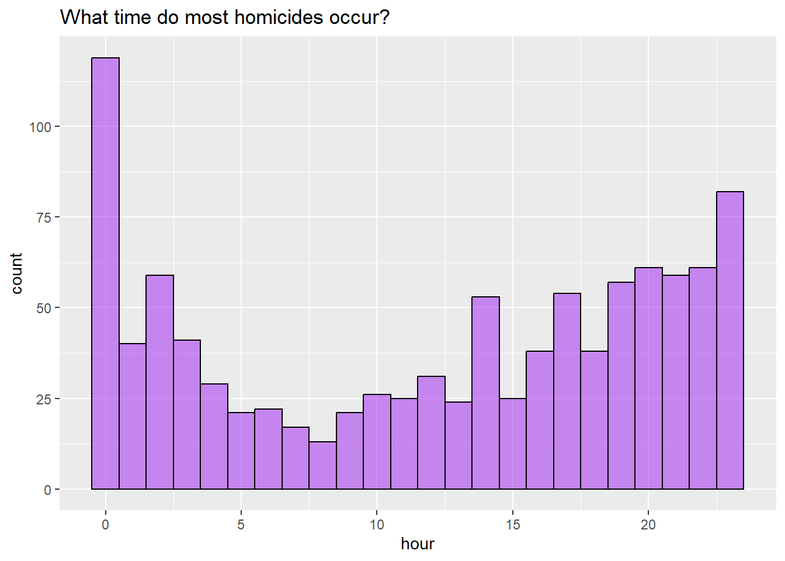

This dataset provides detailed records of homicide incidents across the United States.
Data Dictionary
Column Name
Description
uid
Unique identifier for each record or crime incident.
city_name
Name of the city where the crime occurred.
offense_code
Numeric or alphanumeric code representing the type of offense.
offense_type
Text description of the offense (e.g., “Burglary”, “Assault”).
date_single
Date when the crime occurred (usually in YYYY-MM-DD format).
address
Street address or location description of the crime.
longitude
Longitude coordinate of the crime location.
latitude
Latitude coordinate of the crime location.
location_type
Type of location where the crime occurred (e.g., Street, Residence, Commercial).
location_category
Broader category of the location (e.g., Public, Private).
fips_state
FIPS code for the state where the crime occurred.(A standardized numeric or alphanumeric code assigned by the U.S. government to uniquely identify geographic areas.)
fips_county
FIPS code for the county of the crime location.
tract
Census tract number for the crime location.
block_group
Census block group number for the crime location.
block
Census block number for the crime location.
Setting up libraries
library(readr)library(tidyverse)
── Attaching core tidyverse packages ──────────────────────── tidyverse 2.0.0 ──
✔ dplyr 1.1.4 ✔ purrr 1.1.0
✔ forcats 1.0.0 ✔ stringr 1.5.2
✔ ggplot2 4.0.0 ✔ tibble 3.3.0
✔ lubridate 1.9.4 ✔ tidyr 1.3.1
── Conflicts ────────────────────────────────────────── tidyverse_conflicts() ──
✖ dplyr::filter() masks stats::filter()
✖ dplyr::lag() masks stats::lag()
ℹ Use the conflicted package (<http://conflicted.r-lib.org/>) to force all conflicts to become errors
library(ggformula)
Loading required package: scales
Attaching package: 'scales'
The following object is masked from 'package:purrr':
discard
The following object is masked from 'package:readr':
col_factor
Loading required package: ggridges
New to ggformula? Try the tutorials:
learnr::run_tutorial("introduction", package = "ggformula")
learnr::run_tutorial("refining", package = "ggformula")
library(mosaic)
Registered S3 method overwritten by 'mosaic':
method from
fortify.SpatialPolygonsDataFrame ggplot2
The 'mosaic' package masks several functions from core packages in order to add
additional features. The original behavior of these functions should not be affected by this.
Attaching package: 'mosaic'
The following object is masked from 'package:Matrix':
mean
The following object is masked from 'package:scales':
rescale
The following objects are masked from 'package:dplyr':
count, do, tally
The following object is masked from 'package:purrr':
cross
The following object is masked from 'package:ggplot2':
stat
The following objects are masked from 'package:stats':
binom.test, cor, cor.test, cov, fivenum, IQR, median, prop.test,
quantile, sd, t.test, var
The following objects are masked from 'package:base':
max, mean, min, prod, range, sample, sum
library(skimr)
Attaching package: 'skimr'
The following object is masked from 'package:mosaic':
n_missing
library(visdat) library(naniar)
Attaching package: 'naniar'
The following object is masked from 'package:skimr':
n_complete
library(janitor)
Attaching package: 'janitor'
The following objects are masked from 'package:stats':
chisq.test, fisher.test
library(tinytable)
Attaching package: 'tinytable'
The following object is masked from 'package:ggplot2':
theme_void
library(DT)library(crosstable)
Attaching package: 'crosstable'
The following object is masked from 'package:purrr':
compact
# A tibble: 1,016 × 15
uid city_name offense_code offense_type date_single address
<int> <chr> <chr> <chr> <dttm> <chr>
1 2872478 Chicago 09A murder and nonneg… 2015-01-03 05:50:00 050XX …
2 2873990 Chicago 09A murder and nonneg… 2015-01-05 22:11:00 035XX …
3 2874041 Chicago 09A murder and nonneg… 2015-01-06 00:49:00 093XX …
4 2874296 Chicago 09A murder and nonneg… 2015-01-06 15:38:00 022XX …
5 2874356 Chicago 09A murder and nonneg… 2015-01-06 17:53:00 022XX …
6 2875361 Chicago 09A murder and nonneg… 2015-01-08 21:30:00 012XX …
7 2875743 Chicago 09A murder and nonneg… 2015-01-09 16:20:00 011XX …
8 2876002 Chicago 09A murder and nonneg… 2015-01-10 00:25:00 000XX …
9 2878279 Chicago 09A murder and nonneg… 2015-01-13 17:40:00 042XX …
10 2878439 Chicago 09A murder and nonneg… 2015-01-13 22:10:00 039XX …
# ℹ 1,006 more rows
# ℹ 9 more variables: longitude <dbl>, latitude <dbl>, location_type <chr>,
# location_category <chr>, fips_state <int>, fips_county <chr>, tract <chr>,
# block_group <int>, block <int>
Graphs:
Homicides over time:
gf_histogram(~date_single,data = homicides_mod1,bins =43, fill ="skyblue",color ="black") %>%gf_labs(title ="Distribution of Crimes Over Time",x ="Date of Crime",y ="Number of Crimes" ) %>%gf_theme(theme(axis.text.x =element_text(angle =45, hjust =1)))

From this graph, we can infer that the number of crimes constantly varied with time. There is no visible pattern over the months.
The homicide rate peaked around September, and dropped in January, and mid-February.
gf_bar(~offense_type, fill =~offense_type, data = homicides_mod1 , width =0.2) %>%gf_labs(title ="Count of Crimes by Offense Type",x ="Type of Crime",y ="Count" ) %>%gf_refine(scale_fill_brewer(palette ="Set2")) %>%gf_theme(theme(axis.text.x =element_text(angle =45, hjust =1)))

It is evident from the bar graph that there are only two types of offense- Murder and non-negligent manslaughter, and negligent manslaughter. Most of the crimes are of the offense type- Murder and non-negligent manslaughter.
Where are crimes geographically located?
homicides_mod1%>%gf_point(latitude ~ longitude, color ="orange", size =2) %>%gf_labs(title="Where are crimes geographically located?",x="Longitude",y="Latitude")

It is evident from the graph that multiple crimes have occurred at the same coordinates.
How does offense type vary across block groups?
homicides_mod1 %>%gf_bar(~offense_type| block_group) %>%gf_labs(title ="How does offense type vary across block groups?",x="Offense type",y="count", fill="Block Group" ) %>%gf_theme(theme(axis.text.x =element_text(angle =45, hjust =1)))
Ignoring unknown labels:
• fill : "Block Group"

In each graph, the count of murder and non-negligent manslaughter is greater than that of negligent manslaughter. Out of all the blocks, block 1 has the greatest number of murders, and block 7 has the least amount of crime.
Thus, we can conclude that block 7 is the safest place to live.
Do homicides differ based on months?
homicides_mod1 %>%mutate(month=month(date_single,label =TRUE, abbr =TRUE),year=year(date_single)) %>%group_by(year,month) %>%summarise(count=n(), .groups ="drop") %>%gf_col(count~month | year,fill =~month) %>%gf_labs(title="Number of Homicides per month",x="month",y="count",fill="month" )

This graph suggests that homicides were more frequent in the second half of the year, peaking around August–September, and were lowest in February.
Hypothesis: The dip in homicides in February could be because it has fewer days (28), so there’s less time for incidents to occur, which can lead to a lower count.
Why is there a dip after September?
homicides_mod1 %>%gf_bar(~location_category) %>%gf_theme(theme(axis.text.x =element_text(angle =45, hjust =1))) %>%gf_labs(title ="Distribution of Homicides across location category" )

This graph tells us that most homicides occur on the street, residential areas and open spaces, similarly healthcare, commercial and hotel see the least.
What is surprising is that most homicides occur in public spaces compared to more private controlled areas.
Proportion of location category across cities
homicides_mod1 %>%gf_props(~city_name,fill =~location_category,position ="fill" ) %>%gf_labs(title ="Distribution of homicide: proportion of location category across cities" )

gf_refine(scale_fill_brewer(palette ="Set1"))
<ggproto object: Class ScaleDiscrete, Scale, gg>
aesthetics: fill
axis_order: function
break_info: function
break_positions: function
breaks: waiver
call: call
clone: function
dimension: function
drop: TRUE
expand: waiver
get_breaks: function
get_breaks_minor: function
get_labels: function
get_limits: function
get_transformation: function
guide: legend
is_discrete: function
is_empty: function
labels: waiver
limits: NULL
make_sec_title: function
make_title: function
map: function
map_df: function
minor_breaks: waiver
n.breaks.cache: NULL
na.translate: TRUE
na.value: NA
name: waiver
palette: function
palette.cache: NULL
position: left
range: environment
rescale: function
reset: function
train: function
train_df: function
transform: function
transform_df: function
super: <ggproto object: Class ScaleDiscrete, Scale, gg>
Most cities show high proportions of homicides happening in residential and street locations, with street locations being especially prominent.
Fort Worth has a higher proportion of residential homicides compared to street homicides, and a larger proportion of leisure homicides than other cities. This could mean that violence in Fort Worth may be more closely tied to domestic or personal conflicts, as well as incidents in social or recreational spaces.
Louisville, on the other hand, has a larger proportion of homicides occurring in open spaces compared to other cities, indicating more public or outdoor violence, one hypothesis is that this could be linked to gang activity or public confrontations.
Louisville has a smaller proportion of homicides in retail and healthcare settings, this is still more than those in other cities.
# A tibble: 1,016 × 17
uid city_name offense_code offense_type date_single address
<int> <chr> <chr> <chr> <dttm> <chr>
1 2872478 Chicago 09A murder and nonneg… 2015-01-03 05:50:00 050XX …
2 2873990 Chicago 09A murder and nonneg… 2015-01-05 22:11:00 035XX …
3 2874041 Chicago 09A murder and nonneg… 2015-01-06 00:49:00 093XX …
4 2874296 Chicago 09A murder and nonneg… 2015-01-06 15:38:00 022XX …
5 2874356 Chicago 09A murder and nonneg… 2015-01-06 17:53:00 022XX …
6 2875361 Chicago 09A murder and nonneg… 2015-01-08 21:30:00 012XX …
7 2875743 Chicago 09A murder and nonneg… 2015-01-09 16:20:00 011XX …
8 2876002 Chicago 09A murder and nonneg… 2015-01-10 00:25:00 000XX …
9 2878279 Chicago 09A murder and nonneg… 2015-01-13 17:40:00 042XX …
10 2878439 Chicago 09A murder and nonneg… 2015-01-13 22:10:00 039XX …
# ℹ 1,006 more rows
# ℹ 11 more variables: longitude <dbl>, latitude <dbl>, location_type <chr>,
# location_category <chr>, fips_state <int>, fips_county <chr>, tract <chr>,
# block_group <int>, block <int>, hour <dbl>, time_of_day <chr>
homicides_mod2 %>%gf_bar(~offense_type,fill =~time_of_day,position ="dodge" ) %>%gf_facet_grid(~city_name) %>%gf_refine(scale_fill_brewer(palette ="Set1")) %>%gf_theme(theme(axis.text.x =element_text(angle =45, hjust =1))) %>%gf_labs(title ="Do homicides occur more during the day, or at night?" )

This graph suggests that night-time homicides are far more prevalent than those occurring during the day. Assumption: This could be due to higher alcohol and drug use during the night, fewer witnesses and darkness, which provides anonymity for criminals.
Question: What does the wider bar graph for Fort Worth and Los Angeles (negligent manslaughter) indicate?
What time do most homicides occur?
homicides_mod2 %>%gf_histogram(~hour, fill ="purple",color ="black", bins =24) %>%gf_labs(title ="What time do most homicides occur?" )

This graph tells us that homicides peak at midnight and see a sudden dip in the following hour. Homicides occur the least in the mornings, around 5 - 9 am, as most people start their day around that time.
Summary
The homicide data shows varying trends across locations and time. Homicide rates fluctuated throughout the year, peaking in September and dipping in February. Murder and non-negligent manslaughter were the most common offense types, with Block 1 having the highest crime rates and Block 7 the lowest, suggesting it’s the safest.
Crime locations were dispersed, with street and residential areas being the most frequent. Homicides were more frequent at night compared to daytime.
The prevalence of public space homicides over private areas was surprising.
Questions:
What factors might contribute to the February homicide dip beyond the shorter month?
Why are open spaces associated with more homicides in Louisville?
Could Fort Worth’s higher proportion of leisure homicides be connected to certain local, cultural or social dynamics?